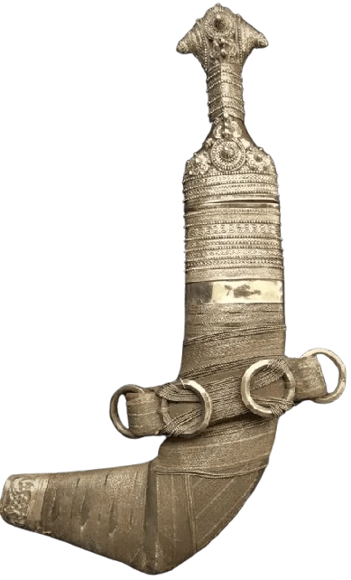

| Clothing Item | Description | Cultural Significance | Image |
|---|---|---|---|
| Dishdasha | Long ankle length robe, usually white or light colored | Everyday wear for Omani men, symbol of national identity and modesty |  |
| Massar | Traditional headwear for Omani men | Symbol of cultural heritage and social status |  |
| Traditional outer garment for Omani women | Symbol of modesty and cultural identity |  |
|
| Khanjar | Traditional dagger with a distinctive curved blade | Symbol of Omani heritage and craftsmanship |  |